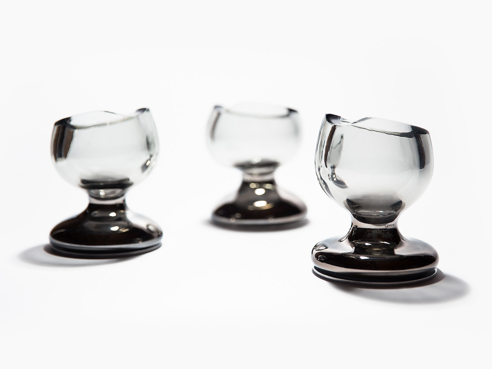

Equipped with a charcoal filter, Air Chalice is a cup for consuming air that brings our relationship to our environment and to consumption to the forefront.
Air surrounds us, is critical to our survival, and shapes our experience of our lived environment. Air pollution is an increasing problem that transcends physical barriers. People all over the world suffer from poor air quality which negatively impacts overall health, strength, and energy.
Fasting has long been considered a way to purify one’s body and mind–fasting reminds us of our own dependence and weakness, and links us to those who suffer hunger as part of their daily lives. Based in the belief that humans can be sustained solely by prana, the life force in Hinduism, Breatharians claim that neither food nor water are necessary for survival. Despite common knowledge that we need sustenance to survive, breatharianism persists.
Designed for Whatnot 2018 Collection
Materials: Aluminum, Charcoal, and Glass
Dimensions: 4 x 4 x 5.5"